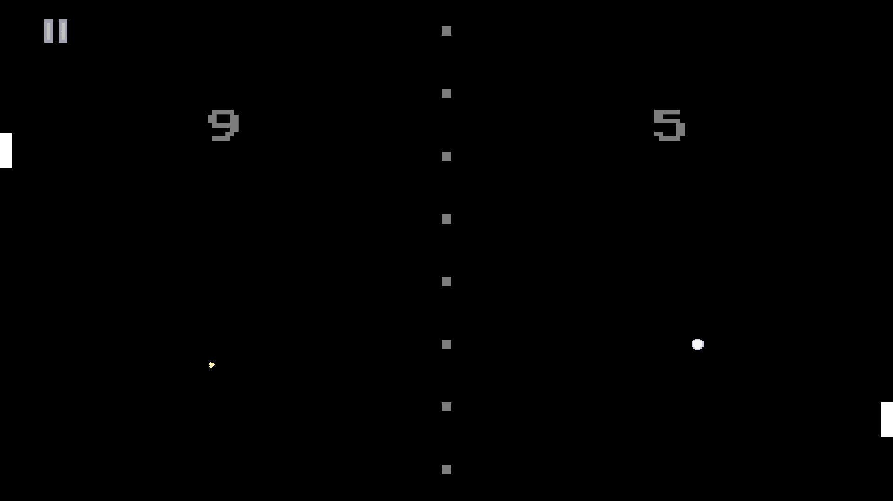
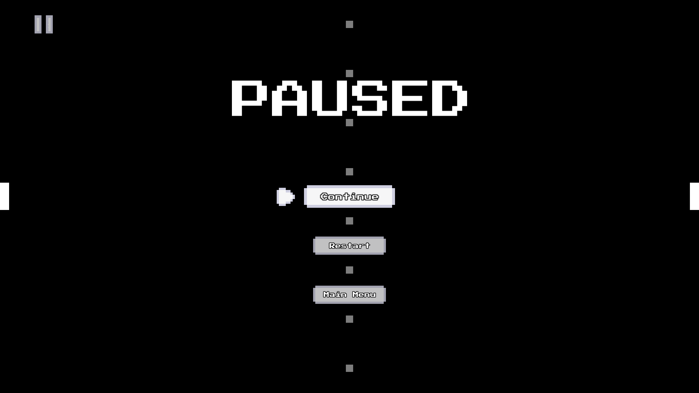
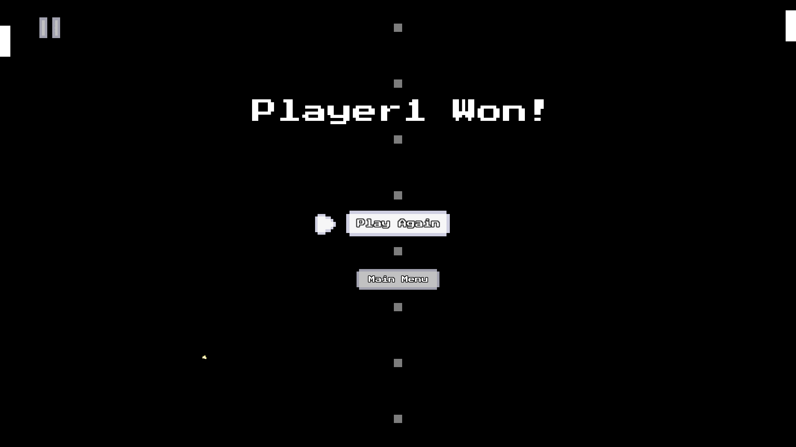
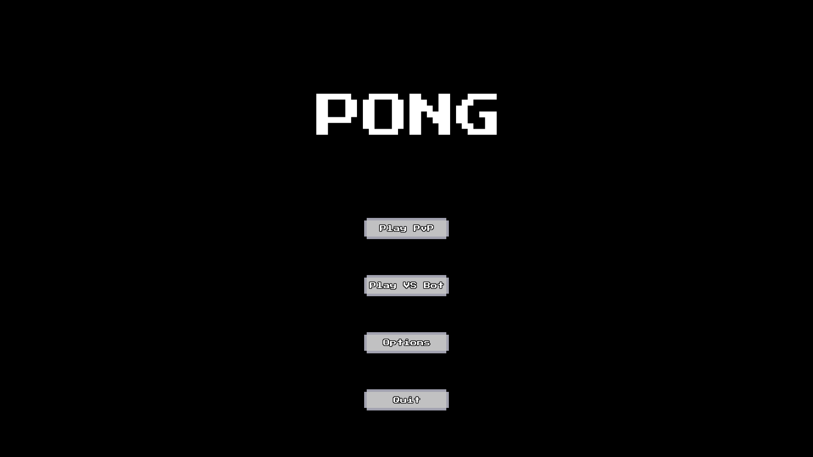
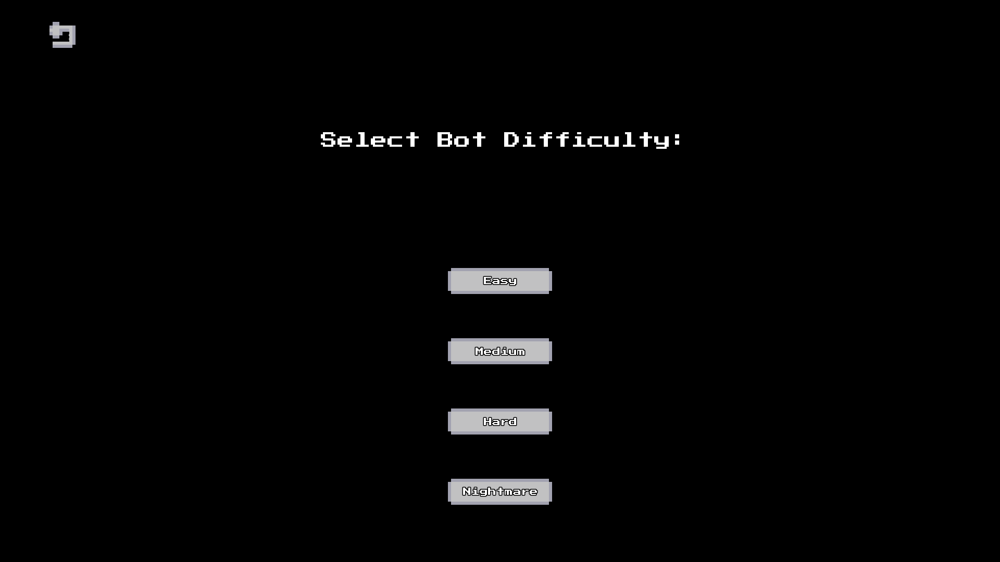
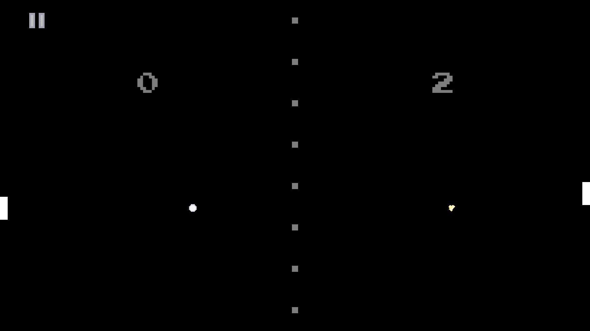

Pong
Daniel Vishnevsky

About
Like for many others, this was my first graphical game ever. The first version was more crude and had only local PvP. But in January 2025 after making my library CX I remade this project to compare SFML to CX. I liked the process so much that I added new features like bots and a hidden party game-mode that I never finished.
Features
You can play against your friend or against AI. AI has 4 different difficulties, the hardest being practically unbeatable.
Gallery




